Reporting Part 2 – Show Me Even More Data!
Reporting Part 2 – Show Me Even More Data!
Dashboards
If you were wondering why we covered so little on dashboards in the previous chapter, it’s because they deserve a whole chapter to themselves!
Dedicating an entire chapter to dashboards will give time to discuss the individual components that make them such an effective way to present information for many organizations. We shall explore a logical approach to building dashboards, one that can be carried forward should you have the chance to read the OneStream Advanced Reporting and Dashboards Handbook.
Here is this chapter’s learning journey:
Figure 9.1
Dashboards are considered the most versatile reporting option in OneStream for both financial and non-financial information. Dashboards can be built to meet application design requirements and serve as the canvas for many solutions in the Solution Exchange.
Reporting Part 2 – Show Me Even More Data! › Dashboards
The Power of Dashboards and Introducing Genesis
Going back to our Top Training example, executives use dashboards for timely, accurate information on Key Performance Indicators (KPIs) and their individual business-area metrics, which can be drilled into for further analysis. This information can support strategic decision-making.
Interactive users, meanwhile, use the dashboards for workflow tasks such as data entry, analysis, financial close, and the reporting of KPIs. With interactivity built in, dashboards can display real-time warnings, such as low product stock levels.
Administrators use dashboards to monitor the health of the OneStream application, providing a mechanism to govern platform changes, raise and monitor support tickets, perform consolidations, and help seed data for budgeting and forecasting.
With OneStream, users can rapidly create and deploy dashboards tailored to their business requirements. Starting with version 9.0, Genesis revolutionizes this process, offering administrators and users a powerful, intuitive solution for building dashboards.
Whilst learning dashboard creation, the author identified a few methods: either using the Genesis solution for a streamlined experience, or by assembling components within a Workspace menu and compiling the pieces of the required dashboard to integrate into a final deployment.
This chapter begins by highlighting Genesis – OneStream’s game-changing, user-friendly dashboard-building interface. Then (for the inquisitive reader), we will transition to the Workspace menu, explaining how each part comes together to form a complete dashboard (what could now be described as ‘behind the scenes’).
Reporting Part 2 – Show Me Even More Data!
The Genius of Genesis
As already mentioned, Genesis is a powerful tool designed to streamline solution development. While this chapter highlights its role in dashboard creation, Genesis extends far beyond that - enabling rapid configuration and deployment of solutions that support operational workflows, planning, analytics, and capabilities that extend into many other areas of OneStream, such as managing datasets or configuring API-based connections.
Its intuitive interface and flexible architecture allow seamless integration with existing environments and effortless scaling to support new business needs.
When focusing on its reporting and analytics capabilities, Genesis enhances administrative efficiency by simplifying configuration for the delivery of dashboards to consumers, supporting Cube Views, pivot grids, spreadsheets, charts, key performance indicators, and more.
Reporting Part 2 – Show Me Even More Data! › The Genius of Genesis
Installing Genesis Could Not Be Easier
The Genesis solution can be set up in each OneStream application that requires its use. Download it from the Solution Exchange and then load it into the OneStream application via the Application tab’s Load/Extract menu.
The solution takes the form of a Workspace called Genesis. This could be the one and only instance, but – as discussed later – further instances of Genesis can be created with additional unique Workspace names.
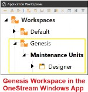
Figure 9.2
Reporting Part 2 – Show Me Even More Data! › The Genius of Genesis
The Genesis Framework
Genesis is accessible through the Modern Browser Experience (MBE), which will serve as the primary login for all users. While a desktop client app with Genesis is available for any remaining on-premise clients, the Software-as-a-Service (SaaS) platform is the standard moving forward. Upon logging in, users interact with two interfaces: Genesis Designer, intended for administrators and power users, and Genesis Navigation, designed for end users.
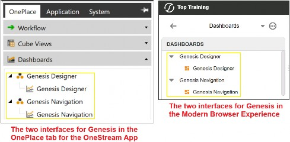
Figure 9.3
Genesis Designer enables administrators and power-users to create the structural hierarchy needed to configure interfaces that are customized for specific business requirements. The core completed frame, as shown in Figure 9.4, comprises Application Groups, Navigation Groups, Pages, and Content Blocks (outlined in red), which provide a modular framework that enables flexible organization of these components and an efficient set-up of functionality.
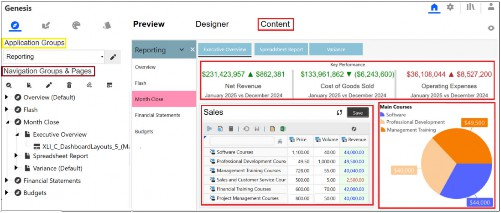
Figure 9.4
Reporting Part 2 – Show Me Even More Data! › The Genius of Genesis › The Genesis Framework
Application Groups
Application Groups are fixed, editable containers for organizing content according to business needs. Genesis provides four pre-named Application Groups, which can be renamed or hidden, but additional groups cannot be created. Instead, as mentioned above, additional instances of Genesis can be created from the Instance Management menu, which provides four more Application groups for each instance of Genesis.
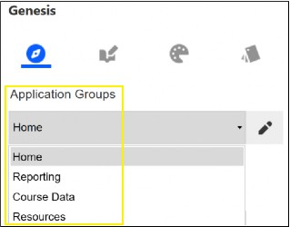
Figure 9.5
Reporting Part 2 – Show Me Even More Data! › The Genius of Genesis › The Genesis Framework
Pages
Within Navigation Groups, Pages serve as customizable screens that showcase reports, dashboards, and other outputs, either using Content Blocks or by linking to an existing item from a shared Workspace (to be able to share other Workspaces in the Genesis environment, the Workspaces must have Is Shareable Workspace set to True). Currently, Pages take a tabular layout across the top of the screen.
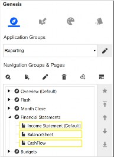
Figure 9.7
Reporting Part 2 – Show Me Even More Data! › The Genius of Genesis › The Genesis Framework
Content Blocks
Content Blocks are configurable elements injected within a Page to display dynamic content. Blocks are continuously being added to Solution Exchange. At the time of writing, there are over 40 Content Blocks available (see Figure 9.9 for some examples), and these are effortlessly imported into your instance of Genesis for the on-premise OneStream Application (relevant for any current remaining on-premise customers). For cloud users, there is an option to upload automatically once the Content Block has been released to Solution Exchange.
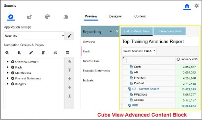
Figure 9.8
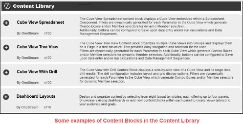
Figure 9.9
Reporting Part 2 – Show Me Even More Data! › The Genius of Genesis
Showcasing Genesis
Businesses often have diverse requirements for dashboard development. While this section does not cover every scenario, it offers an overview of selected Genesis output examples and possibilities.
In each example, the Application Group includes multiple Navigation Groups. Within each Navigation Group, dedicated Pages are created to host (a term known as injected) specific Content Blocks tailored to business needs or linked directly to an object from a Workspace (for example, an existing dashboard).
Figure 9.10 shows some of the icons used in Genesis to create the hierarchy structure.
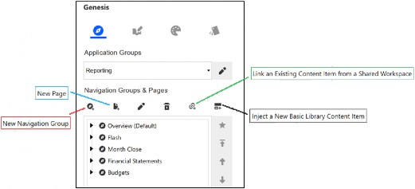
Figure 9.10
Reporting Part 2 – Show Me Even More Data! › The Genius of Genesis › Showcasing Genesis
Home Page
The Home Page block is injected into the Page, where you can use the Designer tab to customize its appearance and content. You can select images from the library or upload your own, enter announcement text, adjust colors, and edit buttons to suit any business requirements.
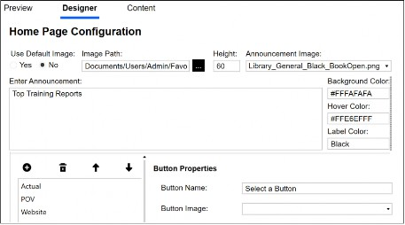
Figure 9.11
Figure 9.12 shows the output in Genesis Navigation.
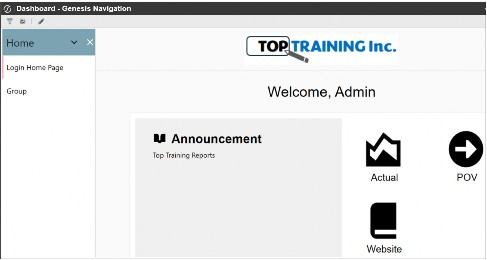
Figure 9.12
Reporting Part 2 – Show Me Even More Data! › The Genius of Genesis › Showcasing Genesis
Cube View Advanced
This Content Block offers additional configuration options on parameters if embedded in the Cube View. The system automatically generates drop-down lists (referred to as combo boxes in OneStream), which can be customized in both description and display format (e.g., member lists or dialogue boxes).
Buttons can be enabled or disabled as needed, and the calculation button can trigger business rules, data management sequences, or pre-defined actions such as calculation, translation, and consolidation.
The Content tab confirms that the Cube View renders correctly with the Preview tab displaying what the user will see (as shown in Figure 9.13).
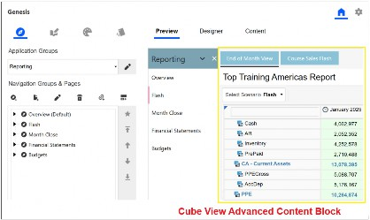
Figure 9.13
Reporting Part 2 – Show Me Even More Data! › The Genius of Genesis › Showcasing Genesis
Cube View Charts
The Content Block can display charts, including pie, line, waterfall, and bar, by either selecting an existing Cube View from a Workspace or using the Cube Query option. With Cube Query, you specify the point of view, column, and row members, and the resulting data is used to generate the chart.
Configuration options range from changing point labels and the number format to modifying legends and color schemes.
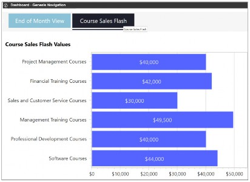
Figure 9.14
Reporting Part 2 – Show Me Even More Data! › The Genius of Genesis › Showcasing Genesis
Cube View Spreadsheet
Within this block, the Spreadsheet is generated from a Cube View connection, with any parameters automatically converted into drop-down lists inside the sheet. You can customize both the parameter descriptions and drop-down display format. Buttons are also configurable as needed. Note that the sheet is saved within the block itself, not in File Explorer.
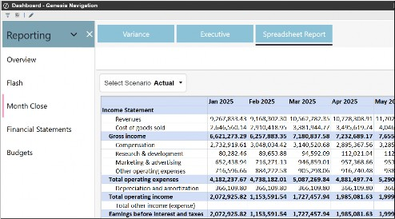
Figure 9.15
Reporting Part 2 – Show Me Even More Data! › The Genius of Genesis › Showcasing Genesis
Dashboard Layouts
This Content Block has several pre-defined layouts and allows you to inject additional Content Blocks into the selected layout or link to existing objects from a Workspace (for example, an existing dashboard).
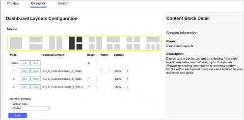
Figure 9.16
Figure 9.17 shows an example in Genesis Navigation with the selected layout containing two Cube Views and a chart.
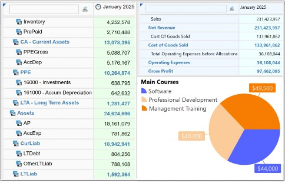
Figure 9.17
The Advanced Dashboard Layouts Content Block provides even more flexibility with the ability to have up to 12 rows, each containing up to 12 cards (where links to existing dashboards or further Content Blocks can be injected in each card). This will enable views to be further tailored to the business requirements.
Reporting Part 2 – Show Me Even More Data! › The Genius of Genesis › Showcasing Genesis
KPI Tile
This Content Block displays a value after you add a Member Filter. (Tip: You can copy the Cell POV from a Cube View to set the initial members; there is no need for the Cb# or P# dimension tokens.) You can also add a description, select a Scenario, compare values against the previous year or period, and define the variance behavior (for example, whether something is better or worse).
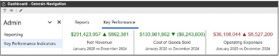
Figure 9.18
Reporting Part 2 – Show Me Even More Data! › The Genius of Genesis › Showcasing Genesis
Pivot Grid
This Content Block enables users to efficiently analyze and filter large data sets. The underlying data source can be easily configured by selecting a Data Adapter from a Workspace. The user can drag and drop fields into columns, rows, filters, and data areas.
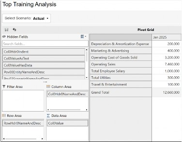
Figure 9.19
Reporting Part 2 – Show Me Even More Data! › The Genius of Genesis › Showcasing Genesis
Spreadsheet Tree
This Content Block is designed specifically to display Excel files stored in the File Explorer. Users can browse a selected folder, and as they click through the hierarchy, each sheet is instantly available for viewing or editing.
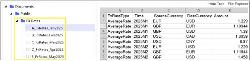
Figure 9.20
Reporting Part 2 – Show Me Even More Data! › The Genius of Genesis › Showcasing Genesis
Colors and Styles
The color palette icon offers a range of built-in color and style options, which can be easily customized. Additionally, you have the flexibility to create your own custom setups. These color changes can be applied to different elements throughout the Genesis frame.
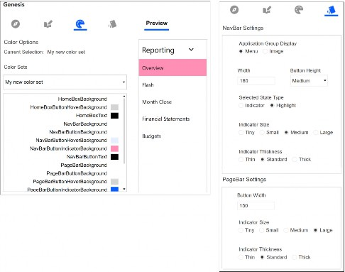
Figure 9.22
Reporting Part 2 – Show Me Even More Data! › The Genius of Genesis
Genesis Can Make You a Star
Genesis is the future of dashboard creation, a solution that can transform administrators into finance or non-finance heroes. Having explored the framework and its practical examples, Genesis empowers administrators to rapidly configure, personalize, and deploy great dashboards. Users can seamlessly blend new and existing content, choose from a variety of layouts, styles, colors, and images, and easily adapt the dashboards to evolving business needs.
Reporting Part 2 – Show Me Even More Data!
Dashboard Overview in Workspaces
Now that we have explored the power of Genesis as the go-to tool for dashboard creation, the remainder of this book will provide administrators and consultants with guidance on building dashboards directly within the Workspace. This approach will also help illustrate what Genesis automatically generates behind the scenes in Workspaces.
The jigsaw puzzle analogy used in this book previously is probably most appropriate for how dashboards can be constructed in OneStream Workspaces. Throughout this chapter, we will discuss various components and embedded dashboards, as well as source items, that are then pieced together in a final frame to present information intuitively.
To begin our learning, and continue with the jigsaw analogy, an overview is shown in Figure 9.23. Likened to the complete picture on the jigsaw puzzle box, we see a typical method of how a dashboard is assembled in OneStream. This consists of a dashboard named Frame, where header, content, and footer dashboards are combined.
Each of these dashboards has various components (that use source items) added to them.
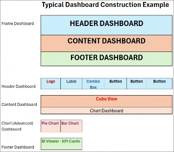
Figure 9.23
Reporting Part 2 – Show Me Even More Data! › Dashboard Overview in Workspaces
Here are the main pieces now laid out on the table
Reporting Part 2 – Show Me Even More Data! › Dashboard Overview in Workspaces › Here are the main pieces now laid out on the table
Logo
This is the organization’s chosen logo component. It retrieves its source from the uploaded image in Application Properties. A recommended naming convention is to use the prefix lgo_Name.
Reporting Part 2 – Show Me Even More Data! › Dashboard Overview in Workspaces › Here are the main pieces now laid out on the table
Label
A component used for displaying text with various font color and size options, and a recommended naming convention that uses a prefix of lbl_Name. The typed text can be set against a substitution variable. For example, after typing the text Forecasting for, the substitution variable |WFYear| can be added. This will embed the year the user’s workflow task has been set to – once the dashboard is run – as per Figure 9.24.
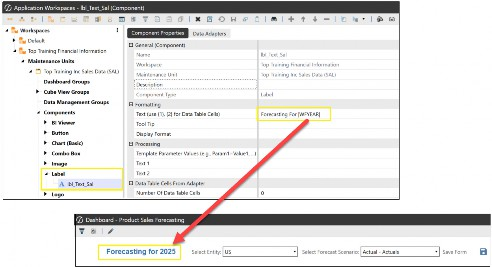
Figure 9.24
Reporting Part 2 – Show Me Even More Data! › Dashboard Overview in Workspaces › Here are the main pieces now laid out on the table
Combo Box
This provides the user with a drop-down list of members from which to select. The source of this list has come from a parameter (see previous chapter on parameters) that an administrator will create and embed in the combo box component. A recommended naming convention is using the prefix cbx_Name.
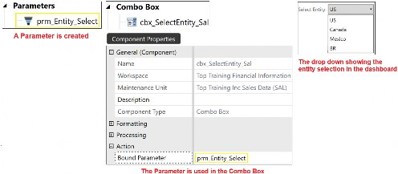
Figure 9.25
Reporting Part 2 – Show Me Even More Data! › Dashboard Overview in Workspaces › Here are the main pieces now laid out on the table
Button
This allows the user to click on an icon in the dashboard. The icon’s image comes from a file the administrator will create and then connect to the button component. The button component will also have an action set that performs a task when the button is clicked. Tasks such as navigating to another dashboard, page or screen, running a calculation, updating items, or downloading a document. A recommended naming convention to use the prefix btn_Name.
Reporting Part 2 – Show Me Even More Data! › Dashboard Overview in Workspaces › Here are the main pieces now laid out on the table
Chart (Advanced)
Examples of charts that are created include pie, bar charts, and line charts. A recommended naming convention is using the prefix cht_Name.
Reporting Part 2 – Show Me Even More Data! › Dashboard Overview in Workspaces › Here are the main pieces now laid out on the table
BI Viewer
The built-in features within the BI Viewer component make it possible to create a complete standalone dashboard (as explained further in the section on Three Ways To Get To One Dashboard, below). This interactive business intelligence visualization of data has features that take the form of charts (used instead of the Chart (Advanced) component), grids, and KPI cards – sourced from a data adapter. Also compatible with existing dashboards, the BI Viewer is viewed by adding the component to a dashboard that is part of a larger frame dashboard. Refer back to Figure 9.23, which shows the BI Viewer as part of the Frame’s footer.
The BI Viewer is simple to build with drag-and-drop building features. A recommended naming convention is using the prefix biv_Name.
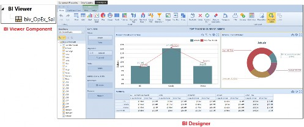
Figure 9.26
Reporting Part 2 – Show Me Even More Data! › Dashboard Overview in Workspaces › Here are the main pieces now laid out on the table
Image
Images are displayed on the dashboard and sourced from, for example, a file or URL link. A recommended naming convention is using the prefix img_Name
Reporting Part 2 – Show Me Even More Data! › Dashboard Overview in Workspaces › Here are the main pieces now laid out on the table
Data Adapter
Data adapters specify the data source types used in components. The key source items that can be used are a Cube View, a Structured Query Language (SQL) script that retrieves data from a database, or a Method Query (some method queries can be prebuilt SQL scripts in the platform). A recommended naming convention is using the prefix da_Name.
All the components have a separate named section, as shown in Figure 9.27.
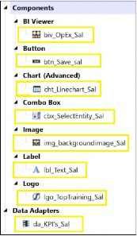
Figure 9.27
Reporting Part 2 – Show Me Even More Data!
Three Ways To Get To One Dashboard
There are three ways to create a dashboard in OneStream. Using Genesis (as already seen above), or just the BI Viewer dashboard component (found under Components within a maintenance unit that’s in a Workspace) is another way, and the grids, charts, and KPIs in this component all interact with each other. All the user has to do is click and view the results. A user accesses the BI Viewer (once it has been built by the administrator) by placing it in a dashboard frame.
The third way a dashboard can be created in OneStream is by conventionally constructing individual components – such as charts, grids, drop-downs, and buttons – and then implementing the interactivity between them. For a user to access these components, they are placed in individual dashboards, which are then assembled in one final dashboard frame.
Typically, there might be a hybrid construction of the latter two methods for more detailed dashboards. These could consist of the generic components being built and used within the sub-dashboards (that are then added to the final frame dashboard), as well as using a feature of the BI Viewer (such as the KPI cards) to complete the final part, which is also added to the Frame.
Reporting Part 2 – Show Me Even More Data!
Designing A Dashboard
When you set out to create a brand-new dashboard (and just like we talked about in the previous chapter), thinking about the end in mind is key. It is important to understand what the dashboard will be used for and then sketch out a wireframe or template that includes the components being utilized and how they are laid out. Excel is a handy sketching tool, as pixel sizes can be comparable to OneStream component sizes.
Top Training would like a dashboard to show sales of their courses and various key performance indicators and to utilize a logo, text, a drop-down to pick a training centre, and charts. Finally, some key performance indicators targeting specific accounts should be included.
Here’s the wireframe.
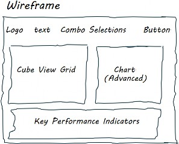
Figure 9.28
Reporting Part 2 – Show Me Even More Data! › Designing A Dashboard
Dashboard Layout
A dashboard can present components in a user-friendly format for the end-user. This is done by the administrator selecting the most appropriate layout type in the Dashboard Properties tab. The key layout types used are:
Reporting Part 2 – Show Me Even More Data! › Designing A Dashboard › Dashboard Layout
Grid
This organizes components into a fixed grid of rows and columns. These are used when embedding dashboards within dashboards. The grid layout also provides the option to create line separators or movable splitters, which users can drag to resize components.
Reporting Part 2 – Show Me Even More Data! › Designing A Dashboard › Dashboard Layout
Tabs
This layout type will slot each component into its own tab. When the dashboard is run, the user will be faced with a series of tabs in the dashboard to work through, with the highlighted tab being the current view.
Reporting Part 2 – Show Me Even More Data! › Designing A Dashboard › Dashboard Layout
Uniform
This layout transforms itself to automatically distribute space equally among all dashboard components, either vertically or horizontally.
Reporting Part 2 – Show Me Even More Data! › Designing A Dashboard › Dashboard Layout
Horizontal Stack Panel
This layout will horizontally align the components. These are good for horizontal header or footer requirements and used for linear component arrangements, enhancing the user readability from left to right. Examples commonly used are an organisation’s logo, text information, and buttons to other dashboards.
Reporting Part 2 – Show Me Even More Data! › Designing A Dashboard › Dashboard Layout
Vertical Stack Panel
This layout will vertically align the components. These are useful when the administrator would like to assign buttons in a vertical set-up for the end user. A vertical stack panel facilitates a top-down approach to viewing components and is suitable for step-by-step processes. Examples commonly used are workflow steps (guiding the user from top to bottom) or a toolbox in the form of various buttons on the left-hand side.
Reporting Part 2 – Show Me Even More Data!
Constructing A Dashboard
When creating a dashboard, the convention is to use a logical approach with each part named effectively (to make maintenance easier and allow a successor to follow the build). Top Training’s approach is to take its requirements and work through the stages of the build. We start in the Application tab and select the Workspaces menu option.
Reporting Part 2 – Show Me Even More Data! › Constructing A Dashboard
Workspaces
With our requirements to hand, the dashboard requires a Workspace to be created (or an existing Workspace can be used). This is an area set up for individuals or a team to build all the parts for one or more dashboards. Each Workspace can be isolated or shared with other Workspaces. The naming convention should consist of a relevant and meaningful name with spaces if necessary.
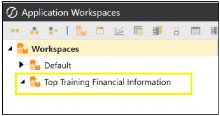
Figure 9.29
Reporting Part 2 – Show Me Even More Data! › Constructing A Dashboard
Maintenance Unit
Under the Workspace, we can divide up the construction of various dashboards (creating separate projects so to speak) through Maintenance Units. Each maintenance unit will automatically present itself with the menu options required for the build; for example, dashboard and Cube View groups, components, data adapters, and parameters.
The naming convention can take the form of a prefix to order the maintenance units and a suffix, which is considered a unique code related to the dashboard construction area.
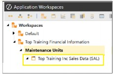
Figure 9.30
From Figure 9.30 above, we can see that to work on the Top Training dashboard, under the Maintenance Unit called Top Training Inc Sales Data (SAL), we require the build of:
A dashboard group that will contain the dashboards required
A Cube View group that will have the Cube View for the grid and chart
Components such as logo, label, images, combo box, chart(Advanced), and KPI cards
A data adapter for the source data, which will be from our Cube View
Parameters to assist us with the drop-down list in the combo box component
Reporting Part 2 – Show Me Even More Data! › Constructing A Dashboard
Dashboard Groups
The dashboards to create are:
0_Frame_SalesDashboard. This will use the grid layout type, and all the other completed dashboards will be finally added to this one.
1_SalesDashboard_Header. This will have a horizontal stack layout type to align the components next to each other.
2_SalesDashboard_Content. This will have a grid layout as it will – eventually – present two components and might require a movable splitter.
2a_SalesDashboard_Chart. This will have a uniform layout as, currently, only one component is used. This may change to a grid if further charts are added.
3_SalesDashboard_Footer. This will be a horizontal layout.
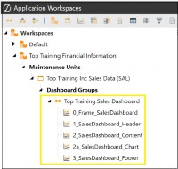
Figure 9.31
Workspaces, maintenance units, and dashboard groups can be built and organized as needed. Commonly, this will end up per stream, per dashboard type, or simply in areas for developing and testing. Ideally, they provide an isolated environment where the same-name items can exist separately.
Dashboard groups organize dashboards in the same way Cube View groups are used to organize Cube Views. They are then able to be deployed to end-users from dashboard profiles.
Reporting Part 2 – Show Me Even More Data! › Constructing A Dashboard
Cube View Groups
The Cube Views placed here will be the source for the Cube View component and the data adapter.
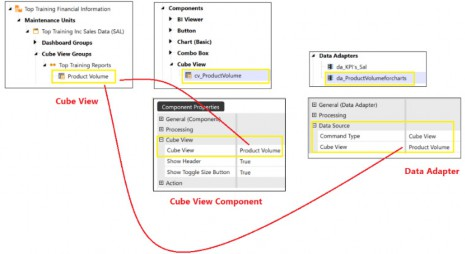
Figure 9.32
Reporting Part 2 – Show Me Even More Data! › Constructing A Dashboard
Components
For our dashboard, we will use the following components:
BI Viewer with KPI cards using a data adapter which has a Cube View embedded for its source
A button representing a Save Icon, using an image from a file
A chart (advanced) that uses a data adapter that has a Cube View embedded for its source
A combo box using a parameter to supply the drop-down members
A Cube View displayed in the dashboard, with the data sourced from the Cube View group
An image component using an image from a file
A label with the text typed and formatting applied
A logo that gets its image from the application properties
Reporting Part 2 – Show Me Even More Data! › Constructing A Dashboard
Data Adapters
Our data adapter will use a Cube View for the grid, the Chart, and the BI Viewer.
Reporting Part 2 – Show Me Even More Data! › Constructing A Dashboard
Parameters
Our parameter uses a member list for the drop-down in the combo box (as was shown in Figure 9.25 earlier).
Reporting Part 2 – Show Me Even More Data!
Piecing It All Together
With all the work done on the individual parts, the next step is attaching the components to the best-fit dashboards and then the dashboards to the final Frame. Work with me on this one:
The Logo, Label, Combo Boxes, and Button will be added to the
1_SalesDashboard_Header.
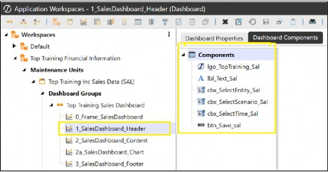
Figure 9.33
The Cube View and image component will be added to the
2_SalesDashboard_Content
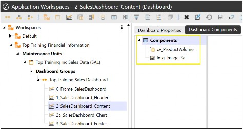
Figure 9.34
The Chart will be added to the 2a_SalesDashboard_Chart.
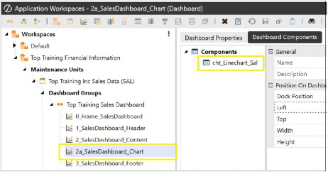
Figure 9.35
The BI Viewer KPI cards will be added to the 3_SalesDashboard_Footer.
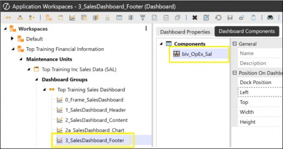
Figure 9.36
The 2a_SalesDashboard_Chart can then be added to the 2_SalesDashboard_Content dashboard.
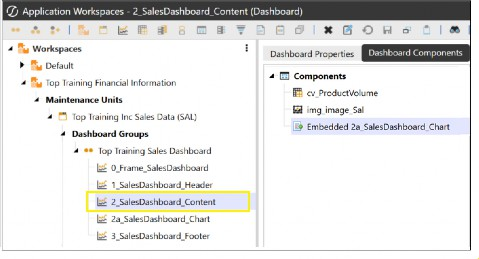
Figure 9.37
Finally, the 1_SalesDashboard_Header, 2_SalesDashboard_Content, and 3_SalesDashboard_Footer can all be added to the 0_Frame_SalesDashboard for the completed dashboard.
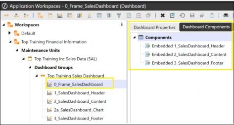
Figure 9.38
Figure 9.39 shows the completed 0_Frame_Salesdashboard once run.
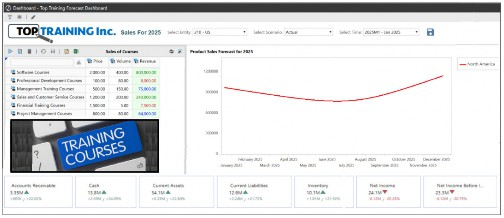
Figure 9.39
The final dashboard can be a landing page (the dashboard the user will see immediately as they log into the platform). This can be done by individuals using the OneStream icon once the dashboard shows and selecting Set Current Page As Home Page, or for a group using the Home Page Manager in Administrator Solution Tools, which sets the dashboard as the home page.
A neat design is to make the landing page a front-end portal for the user. This consists of an interactive experience by providing buttons to various other dashboards and back again. This would also be a good medium to communicate any OneStream news from the Centre of Excellence team.
Other items, such as links to non-OneStream areas (like Top Training’s intranet page), may then make the portal an easy-to-use one-stop shop.
Reporting Part 2 – Show Me Even More Data!
Conclusion
Creating dashboards is an art, and – with practice – it soon becomes clear that they can cater to a very broad range of requirements in an organization. They are consumed by many roles for various reasons and are considered a living report… one that can evolve easily.
There are three ways to create dashboards in the platform – Genesis, BI Viewer, or the more traditional use of each component. Using the latter two for a single dashboard is also an option.
Dashboards are evolving in OneStream, heading towards being built around the framework we now know as Genesis. This low-code, plug-and-play architecture with enhanced capabilities, provides a means to fast dashboard creation. Genesis will aid non-technical users to design, build and deploy visually pleasing and dynamic user-friendly interfaces within their teams.
Financial and operational dashboards will also be able to incorporate AI narrative summarization for planning, operational analytics and key performance indicators.
When designing a dashboard – whether using Genesis or building directly within the Workspace – always begin with the end in mind. Sketch out where each component will appear to guide your layout and structure. Familiarizing yourself with the available components will help you determine exactly which elements are needed for your project. By following a logical approach, including consistent naming conventions and thoughtful embedding of individual dashboards, you can create an effective and visually appealing final Frame dashboard.